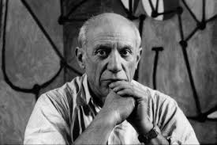
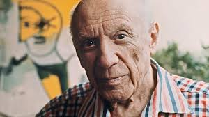
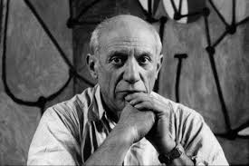
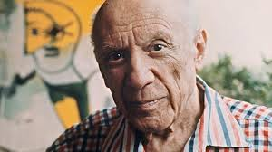

Biographie
Pablo Picasso (1881-1973) est un artiste espagnol considéré comme l’un des plus influents du XXe siècle. Il est surtout connu pour avoir cofondé le mouvement cubiste avec Georges Braque, et pour avoir exploré différents styles tout au long de sa carrière.
 



Œuvres célèbres
- Les Demoiselles d’Avignon (1907)
- Guernica (1937) – dénonciation de la guerre
- La Vie (1903) – période bleue
Styles artistiques
Picasso a traversé plusieurs périodes artistiques : la période bleue, la période rose, le cubisme, et le surréalisme. Il a également travaillé la sculpture, la céramique et le dessin.
Héritage
Son influence sur l’art moderne est immense. Des musées entiers lui sont consacrés, notamment le Musée Picasso à Paris et à Barcelone.